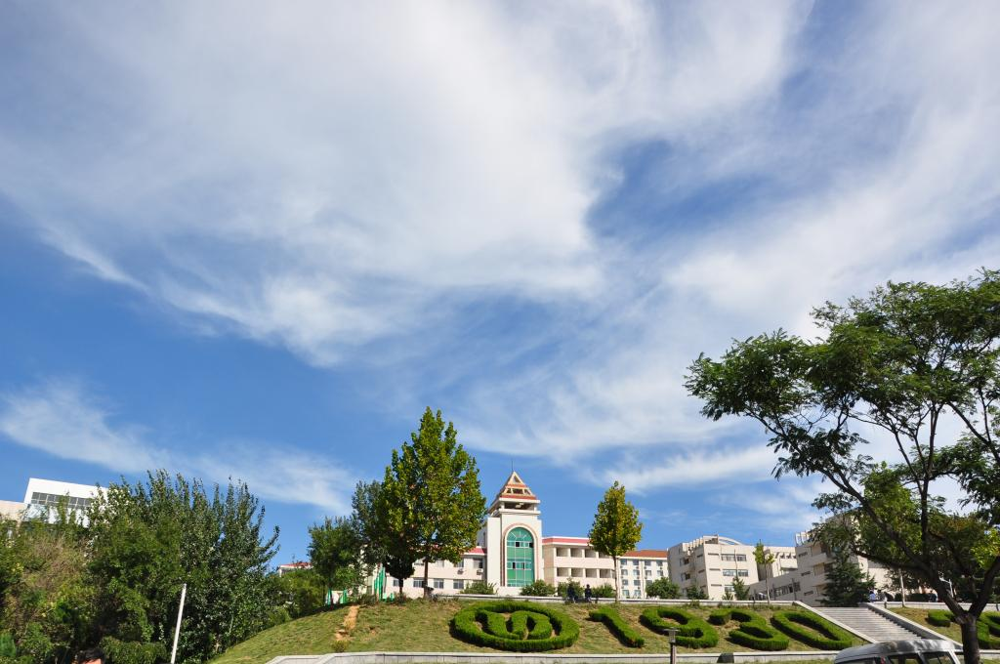
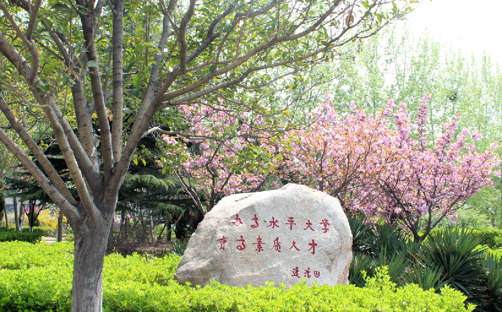

当春风拂过鲁东大学的校园，整个世界都被染上了温柔的色彩。从南门进入，主干道两侧的玉兰花率先绽放，粉白相间的花瓣在阳光下舒展，像一群亭亭玉立的少女，将春日的浪漫铺满了整条道路。沿着小路往图书馆方向走，人工湖的湖面波光粼粼，岸边的垂柳抽出了嫩绿的枝条，随风轻摆，仿佛在梳理自己的长发。偶尔有几只水鸟掠过水面，激起一圈圈涟漪，为静谧的湖面增添了几分灵动。
校园里的樱花大道是春日最动人的风景，每年四月，满树的樱花如云似霞，粉白的花瓣随风飘落，铺成一条浪漫的花径。同学们或驻足拍照，或在树下漫步，享受着春日的美好。除了樱花，校园里还有迎春、海棠、丁香等多种花卉，次第开放，将整个校园装点成了一座花园。午后的阳光透过树叶的缝隙洒在地上，形成斑驳的光影，走在校园的小路上，听着鸟鸣，闻着花香，仿佛置身于一幅绝美的春日画卷中。
鲁东大学的校园依山傍海，春日里的校园更是充满了生机与活力。无论是清晨在操场上跑步的同学，还是午后在草坪上看书的学子，都在这美好的春光里，书写着属于自己的青春故事。校园里的每一处风景，都承载着鲁东学子的梦想与希望，见证着一代又一代学子的成长与蜕变。

